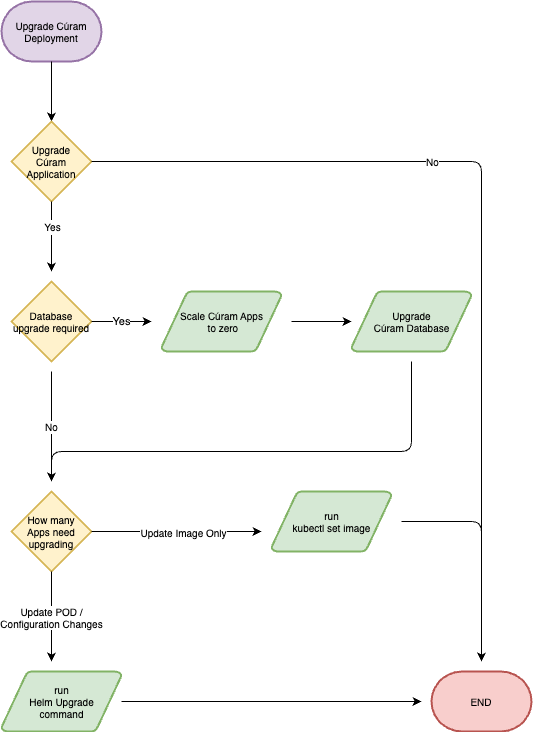

One of the benefits of Cúram on Kubernetes is the reduced time required to roll out a new version of your application from development all the way to production.
Depending on the type of change that needs to be made, there are multiple options for rolling out the change. The different options are visualized in figure 1.

Figure 1: Upgrade process flow
All the application images should be built by a continuous integration environment, tagged appropriately (e.g. combination of product version and a timestamp), and then promoted throughout all the phases.
Updates can be applied using 2 ways: Helm values, or by editing the deployed resources using kubectl.
Updating with kubectl #
You can update a running application by using the following command to switch out an image, Kubernetes takes care of everything else. A new pod with the new image is started up, and when it reports as 'Ready', it takes over serving traffic.
kubectl set image deployment/<deploymentName> <containerName>=<newImage>:<newTag>
This process is described in greater detail in Updating a Deployment.
For example, the following command will issue an instruction to the Kubernetes Master to change the image used by the apps-producer-rest container of a deployment called myRelease-apps-rest-producer to minikube.local:5000/rest:vNext
kubectl set image deployment/myRelease-apps-rest-producer apps-producer-rest=minikube.local:5000/rest:vNext
The status of this change can be monitored using kubectl get pods --watch or kubectl rollout status deployment/myRelease-apps-rest-producer
If the rollout is not successful (for example, because of a typo), the last update can be rolled back:
kubectl rollout undo deployment/<deploymentName>
This is convenient when only a single image needs to be updated, and the changes do not require any database changes (for example, the Universal Access React application would be a good candidate). However, bulk updates of images or configuration should be handled with Helm.
Rolling out updates with Helm #
An update using Helm can include configuration changes, as well as a change of Docker® images. Assuming that all images are tagged with the same tag, the upgrade command would look like the following example:
helm upgrade <releasename> <chartName> --reuse-values --set images.tag=vNext
The helm upgrade command keeps all the values used with the original helm install due to the --reuse-values flag, and only changes the images.tag value, so all new images are deployed with the vNext tag.
Like kubectl, if you must reverse any configuration changes applied by the last action, use helm rollback <releasename>.
The full documentation of the helm upgrade command is available on the Helm Updating a Deployment page.
Upgrade with SQL changes #
Both of the scenarios described assume a no-impact, zero-downtime upgrade, that is no changes to the database are required. However, should the rollout include schema changes, the application must be halted. This must be coordinated together with your IT Operations and DBA teams.
To halt the application for the duration of the upgrade without deleting all Kubernetes objects, the application can be scaled down to 0 pods:
kubectl scale --replicas=0 deployment/<deploymentName>
After the database upgrade is completed, the new version of application code can be rolled out using the Helm method described in Rolling out updates with Helm.
Note: The kubectl scale command can be used to horizontally scale your application.